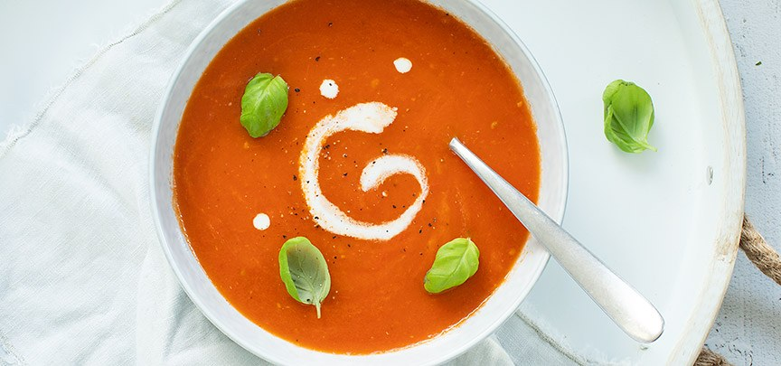

Tomatensoep
Dit snelle basisrecept voor verse tomatensoep staat binnen 20 minuten op tafel en lukt gegarandeerd.
Ingrediënten
- 1 ui (gesnipperd)
- 2 tenen knoflook (fijngesneden)
- 750 gr romatomaten (in parten)
- 750 ml water
- 1 groentebouillontablet
- 1 klein blikje tomatenpuree
- Scheutje kookroom
- 2 eetlepels olijfolie
- Optioneel: verse basilicum
Bereidingswijze
- Zet een soeppan op het vuur en fruit de ui en knoflook ongeveer 3 min in de olijfolie.
- Voeg de tomaten parten toe en bak deze 5 min mee.
- Voeg het water en de bouillontablet toe en roer de tomatenpuree er door, laat nog een paar minuten koken.
- Pureer nu alles met een staafmixer en laat de tomatensoep een paar minuutjes doorkoken.
- Proef of de soep nog een beetje peper of zout nodig heeft.
- Serveer de tomatensoep in 4 borden of kommen. Schenk in elk bord of kom een klein scheutje kookroom.
- Garneer de soep eventueel met verse basilicum.
